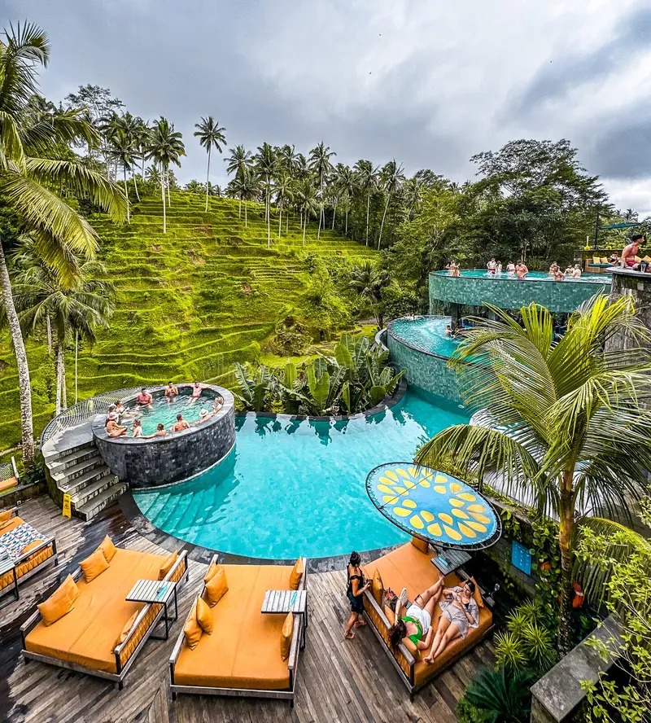
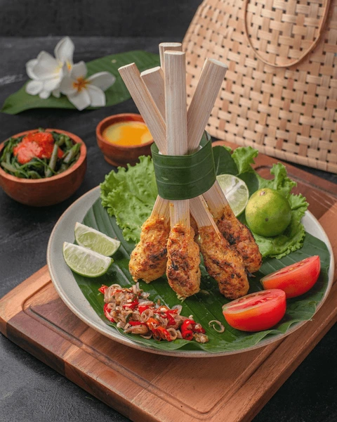

O que fazer em Bali:
- Visitar o Monte Batur ao amanhecer
- Relaxar nas praias de Kuta e Nusa Dua
- Explorar os Arrozais de Bali
- Visitar o Templo de Besakih
- Passar um dia nas Ilhas Gili
- Conhecer as Cachoeiras Nung Nung
- Conhecer a cultura visitando Ubud
- Experimentar o famoso Bali Swing
- Experimentar as massagens
- Visitar a Monkey Forest em Ubud

Comida a não perder:
- Iga Babi - Costelihas de porco estilo balinês
- Sate Lilit - Carne picada com especiarias servidas em palitos
- Nasi Goreng - Arroz frito misturado com carne, especiarias e vegetais
- Babi Guling - Leitão Assado
- Ikan Bakar - Peixe grelhado
- Nasi Jinggo - Arroz fofo
- Kopi Luwak - Café tradicional de Bali

Melhores cidades para visitar:
- Ubud
- Jatiluwih
- Denpasar
- Kuta
- Seminyak e Legian
- Canggu
- Beraban
- Uluwatu
- Jimbaran
- Nusa Dua
- Sanur